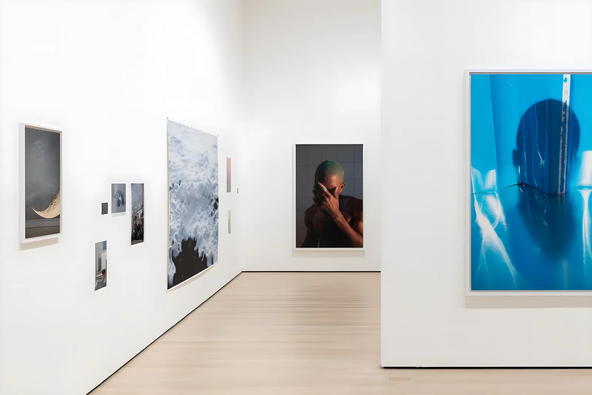
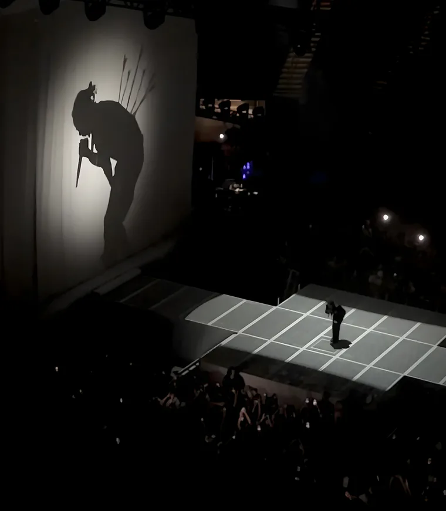
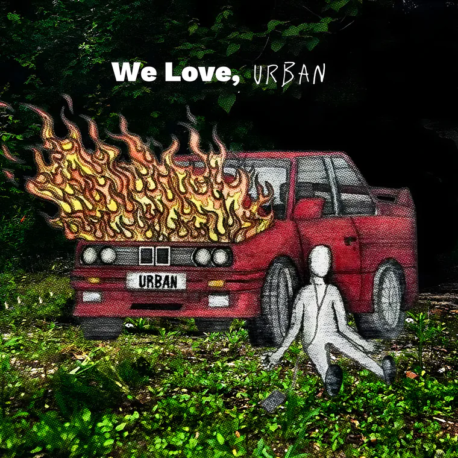
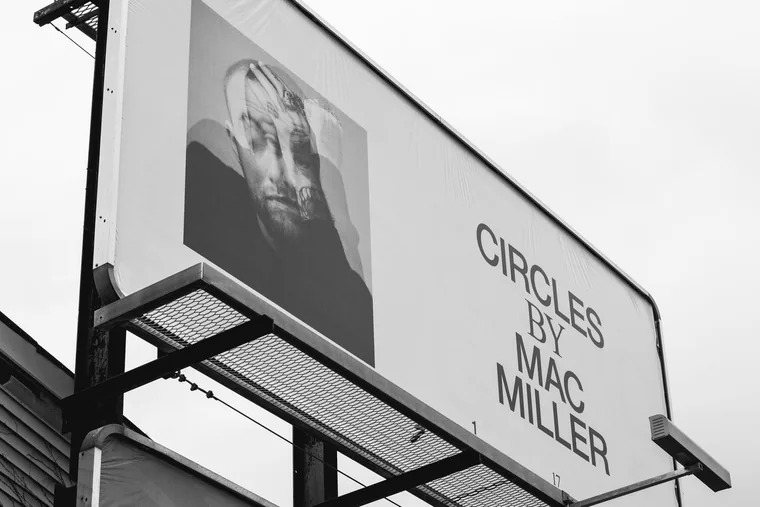
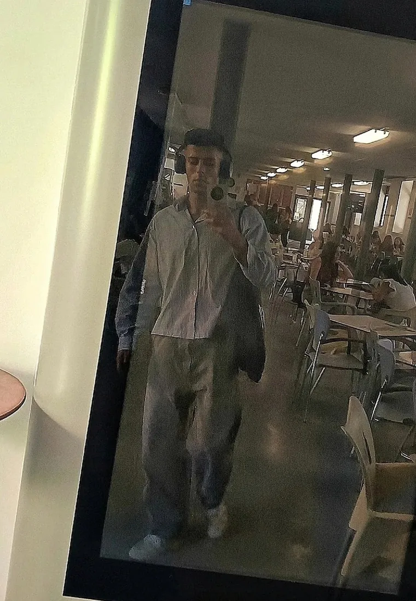

Proyectos / 01 — SONIDO
Music — Content Collaborator

No se puede gestionar el talento si no se entiende primero qué es lo que nos rompe y lo que nos repara.
Colaboración estratégica en la gestión y desarrollo de una de las plataformas pioneras de cultura musical urbana, centrada en la intersección entre el arte, la psicología y el bienestar emocional.
Mi paso por @weloveurban no fue planeado. Nació de una conversación, de un interés común y de la necesidad de poner palabras a lo que se siente cuando cierras los ojos y el mundo desaparece. La forma de procesar la realidad a través del sonido.
First Experience | In Rainbows.
Psicología del Vínculo | BoJack & In Rainbows.
Rigor y Transparencia | Robe & Extremoduro.
El Coraje de la Supervivencia | BoJack & Weird Fishes.
"Earth without art is just a rock"
A lo largo de los últimos meses he podido desarrollar mi pasión por el arte, en concreto sobre la MÚSICA. — Cautivadora de corazones. Recopiladora de historias y emociones. Culpable de mis pasiones. Sinónimo de alma dulce. Y que la vida me ilustre.
Junto a infinitas conversaciones y experiencias compartidas, he podido formar parte y participar dentro de esta hermosa comunidad. Además de numerosas recomendaciones, he tenido el placer de colaborar de forma activa en varias publicaciones y análisis metafísicos y sonoros.
A lo largo de estas vivencias, he tratado temas como…
La sensación de la primera vez | In Rainbows | Radiohead.
El asombro de perderse en la música y el tesoro de una primera experiencia. Y qué gran experiencia - y mejor álbum.
La Psicología del Vínculo | All I Need | Radiohead.
La profunda necesidad de ser "visto" y amado. Esa breve línea entre el orden y el caos, entre el amor y la autodestrucción. Las dualidades de la vida… llenas de contradicciones coherentes, como un abrazo helado que te llena de calor. El significado del amor verdadero: ser feliz por uno mismo, para serlo aún más junto a la persona que amamos. El amor debe sentirse libre. Debemos ser capaces de volar, y a veces, saber dejar a otros volar.
El Elogio de lo Imperfecto | Robe & Extremoduro | Material Defectuoso.
Frente a un mundo de filtros y marketing vacío, la reivindicación de la verdad desnuda. Analizar a Robe es entender que el camino se inventa a cada paso, y que ser transparente —aceptando nuestra propia "materia defectuosa"— es la única forma de caminar con orgullo (o al menos empezar).
El Coraje de la Supervivencia | BoJack & Weird Fishes.
Aquí la música y la narrativa chocan con el abismo. No escribí este análisis desde la técnica, sino desde la supervivencia. He analizado el terror de tocar fondo - no como un lugar para coger impulso - para llegar a la única conclusión que importa: el abismo no es una oportunidad para descansar, es el riesgo de dejar de existir. Hace falta coraje para vivir.
Hablar sobre la romántica falsa ilusión del suicidio fue complicado. Recibir respuestas de personas diciendo que esas palabras les han servido de oxígeno en sus horas más oscuras fue mi confirmación definitiva. Vale la pena. La sensibilidad es sinónimo de fortaleza.
— me and my mixed music taste against the world.

01/04 
02/04 
03/04Circles — Public-Library 
04/04